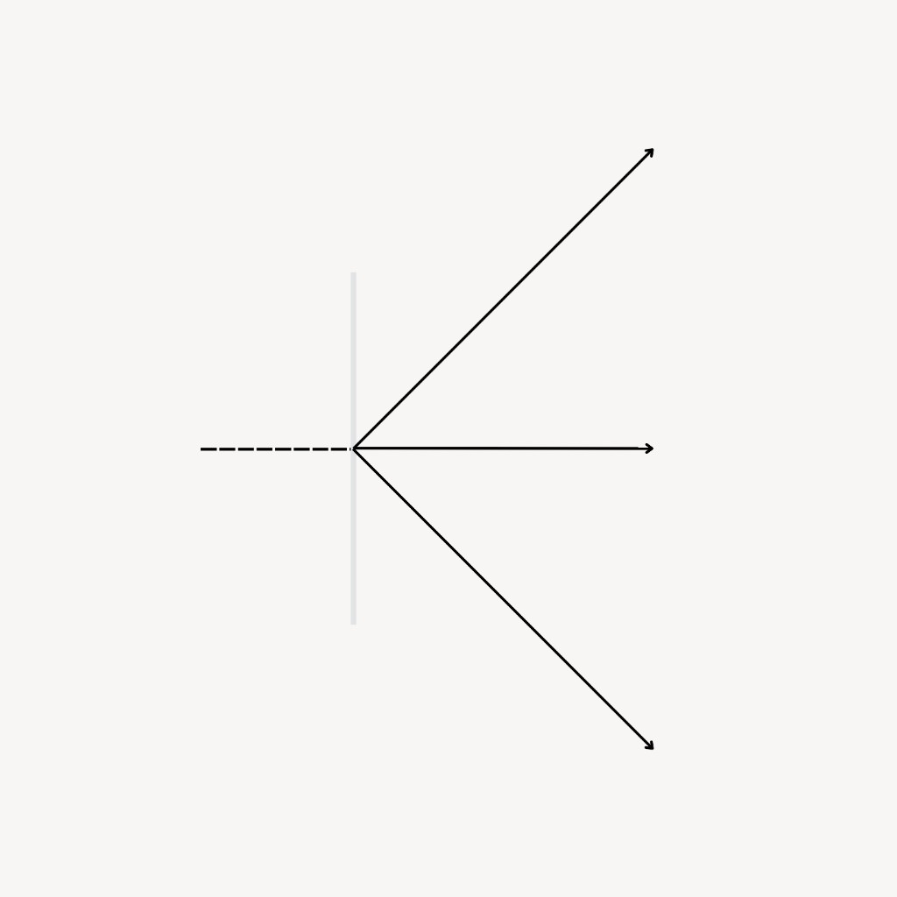

You Didn’t Start This, but You Own How It Ends
The project plan you inherit might be right. Or it might not be — the objectives may have changed, the business context may have changed, the stakeholders may have changed, things may have been missed. Here's the process to figure that out, and do a healthy reset.
Behind the Story


TL;DR
- Here's a six-step way to reset a project you're inheriting mid-flight, without freezing it or blowing it up.
- The plan you got handed might be totally fine, or the objectives, the business, and the people may have shifted without the plan ever catching up. Either way, you own what happens next.
- The expensive mistake is skipping the reset and assuming you already know the state of the project parts and stakeholders.
- None of this assumes the work so far was bad. The point is finding out what's true before you decide what to change.
Here's the first thing I'd tell you, before anything else: the plan you inherited might be completely fine. Or, it might not be. And you genuinely don't know which yet — not because anyone did a bad job, but because plans go stale quietly, the way milk does, while everyone's attention is somewhere else. Objectives shift. The market moves. Somebody two levels up reprioritizes and the memo never quite makes it down to the project plan. You can execute a plan perfectly and still be hitting a target that stopped being the target months ago.
So before you praise it, and before you blow it up, you check. That's your first move.
Foundation
Alignment & Execution
Assume a combination of both
I've watched people get this wrong in exactly two ways, and both come from good intentions. Some people keep everything running exactly as it was, because touching a moving project feels risky, and continuity feels safe. Others come in fast and start changing things, because that's how you show you're serious about the job. I understand both impulses — I've had both. But they're really the same mistake: they both skip the part where you find out what's actually true before you act on it. Change too fast and the team that built the first version stops telling you what's really going on and starts telling you what you want to hear. Change nothing and you inherit every assumption unchecked, including whatever's quietly stopped matching what the business actually needs now.
Neither failure is about effort. It's about skipping the real work.
One thing I want to say clearly, because it matters: none of this assumes the work so far is bad. Most of the time it's fine — better than fine — and the check just confirms it. When it isn't fine, that's rarely the whole story either. The person who's been carrying it may have been doing it alone. They may have been covering for a gap somewhere else on the team. They may have had something going on outside work that had nothing to do with any of this. You're not just stepping into a project — you're stepping into the middle of someone's reputation. Find out what happened before you decide whose fault it was, or whether it was anyone's fault at all. Always assume good intent.
The order I do this in
1. Check before you touch anything
This is where you go and look for yourself. Pull the last three status updates and hold them up against what actually shipped — not what was scheduled, what really happened. Then go talk to two or three people doing the work, not just the ones running the meetings. They'll usually tell you where it's actually stuck, often with a sigh you'll learn to recognize. Status reports aren't lying to you — they're just always a little behind the reality, and that's just as true of projects going well as projects going badly. Skip this and your first real decision gets made off the version of events that made it into the deck, not the version that actually happened.
2. Sort out what should go and what should stay
Every project picks up decisions along the way. Some were evidence-based decisions — someone weighed the options and picked one, for a reason they could still explain to you today. Others just happened, because nobody was in the room to stop them. You need to know which is which before you touch anything, because reversing a correct decision throws away good thinking that already went into it. And leaving drift in place just because it's already there isn't really a decision — it's an accident you're choosing to keep. Either way, sorting through what stays and goes is your opportunity to demonstrate your approach to the team and build trust.
3. Find out who's really been holding this together
The org chart will tell you who's accountable. It won't tell you who's actually been making things move when they got stuck. Project teams tend to follow the 80/20 rule like anywhere else — a small group of people end up driving most of the outcomes at any given time. That doesn't mean everyone else is replaceable; different phases of a project just lean harder on different people, and right now, someone's carrying more than their formal role suggests. Find these people quickly and build a relationship with them before you change anything.
4. Say out loud what "done" means now
Set the bar for what "done" means — say it out loud, put it in writing, and share it with everyone who'll work on the deliverable, directly or indirectly, so they can push back if they need to. This is a step people tend to skip. Done might mean the steering committee has reviewed the deliverable, it's saved to the shared folder, and an email's gone out — don't assume that happens on its own. Get the simple workflow right, and the complex stuff tends to follow.
5. Make one change early — and pick it for what it signals, not its size
Find something small enough to execute cleanly and visible enough that people actually notice. The change itself isn't really the point. What you're proving is that you'll act on what you found in step one, instead of just collecting notes for a deck. Go too big too fast and you can fail before you've earned the trust to recover. Stay invisible and you've told the team nothing at all. This could be as simple as setting up regular status meetings to track progress.
6. Go back and re-baseline the promises made before you got here
Somewhere upstream, someone told a client, a board, or a boss a date, a number, or a scope. That promise is yours now, whether or not you're the one who made it. Go back to whoever it was made to and tell them plainly what's changed and what hasn't. It's an uncomfortable conversation, which is exactly why people put it off — and exactly why putting it off is the most expensive mistake on this list.
Project reset comparison. Nine inherited commitments change to the re-baselined plan.
Where this often goes wrong
None of this fails dramatically, which is part of why it's so easy to skip. Skip the check, and you inherit an assumption nobody's tested — one that might've been perfectly reasonable when it was made, and just never got revisited since. Skip the sorting, and you'll spend a month undoing a decision that was actually right. Skip finding the real owner, and your first change looks fine on a slide and dies the moment it hits the room, because the one person who could've made it work wasn't in on it. Skip the re-baselining, and you find out the hard way that the deadline you inherited was never really realistic — it was a promise made in a meeting you weren't in, based on assumptions nobody told you had changed.
None of these are big, dramatic failures. They're quiet ones. That's exactly why they're so common.
What I'd want you to remember
Check before you decide, every single time you inherit something mid-flight. Ask yourself: can I name one specific thing the last status report got wrong? If you can't yet, you haven't really checked — you've just read the summary.
Sort every decision into "keep" or "change" before you touch any of them. Before reversing something, ask whether you actually know who made the original call and why. If you don't, you don't yet know whether you're fixing a mistake or undoing someone's hard-won trade-off.
Renegotiate commitments out loud instead of quietly inheriting them. Has the person the original promise was made to actually heard from you what's changed? If not, you're still carrying someone else's promise around like it's your own.
You might also like
- Pricing Strategy — Basecamp and Design Pickle, with Marn & Rosiello and Hinterhuber
- Go-to-Market Plan — Slack and Snowflake, four motions, Moore's positioning line
- SWOT Analysis — Duolingo and Peloton, Hill & Westbrook, TOWS pairing
- Competitor Analysis — Basecamp and managed bookkeeping, Armstrong & Collopy
- Market Sizing (TAM/SAM/SOM) — Airbnb's S-1 and a bookkeeping firm, Atlanta Fed
- Business Model Canvas — Spotify and EPAM, Osterwalder origin
The reset is easier with the right people in the room.
Check what's true, then decide what stays.
Find the people who help you land it.